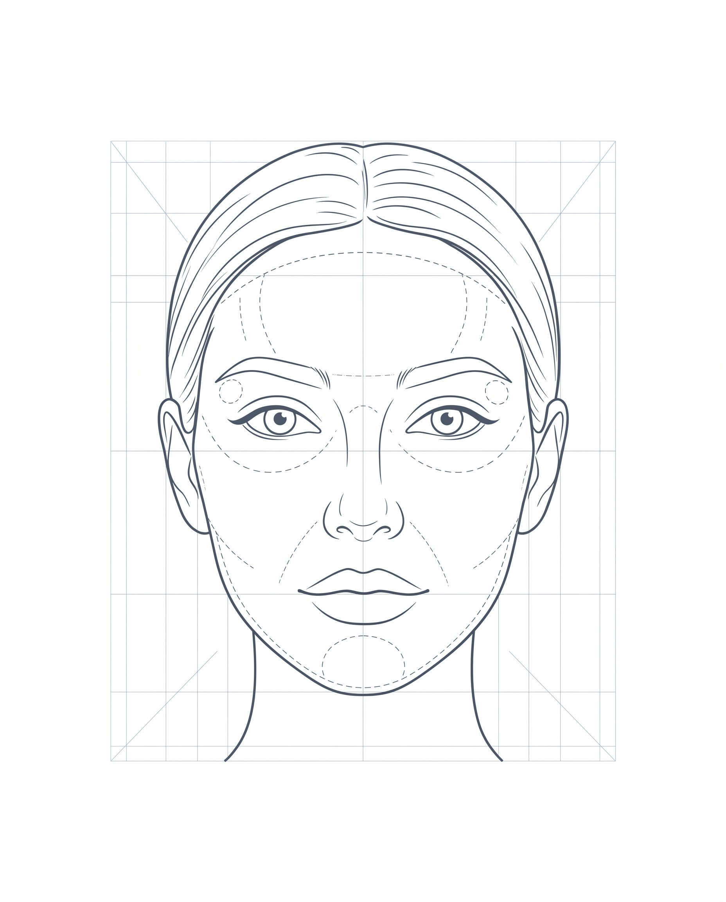

Кровоснабжение и придатки кожи: анатомия и безопасность процедур
Реакция кожи на инъекции и аппаратные вмешательства зависит от сосудистых сетей, нервных структур, волосяных фолликулов и желёз. Знание анатомии помогает выбирать метод и оценивать восстановление, но не позволяет свести безопасность к одной глубине, инструменту или признаку на поверхности кожи.
Ключевые тезисы (Главное)
- Кровоснабжение дермы организовано в связанные глубокую и поверхностную сети; эпидермис получает питание диффузией и собственных кровеносных сосудов не содержит.
- Расположение сосудов, нервов и придатков неодинаково в разных зонах; точечное кровотечение не подтверждает заданную глубину или безопасность введения.
- Канюля, малая глубина и отсутствие боли не исключают сосудистого осложнения. Условно «безопасных точек» для самостоятельного введения препаратов нет.
- Нарастание симптомов требует оценки, но опасное состояние может возникнуть и сразу: побледнение, сетчатое изменение цвета и нарушения зрения после филлера не допускают выжидания.
Почему зоны лица реагируют по-разному
На лице различаются толщина эпидермиса и дермы, объём и распределение жира, плотность желёз, ход сосудов и чувствительных ветвей нервов. Глубина сосудов меняется по ходу их ветвления и отличается у разных людей; операции, рубцы и предыдущие вмешательства дополнительно изменяют тканевые ориентиры.
Поэтому единая настройка аппарата или одинаковая техника инъекции для всего лица не является универсальным правилом. Метод выбирается после диагностики, оценки зарегистрированных показаний и анатомии конкретной области.
Прикладная анатомия: сосудистые сети и придатки кожи
Два сосудистых этажа

| Сеть | Расположение и связи | Функциональное значение |
|---|---|---|
| Глубокое сплетение | Вблизи границы сетчатой дермы и подкожной клетчатки; связано с более крупными сосудами | Доставка и отток крови, питание глубоких структур и придатков |
| Поверхностное сплетение и капиллярные петли | Более поверхностные отделы дермы; петли входят в дермальные сосочки | Обмен с бессосудистым эпидермисом, участие в теплообмене и формировании цвета кожи |
Лимфатические капилляры отводят избыток тканевой жидкости, но кровеносная и лимфатическая сети не тождественны. Склонность к отёку определяется также воспалением, проницаемостью сосудов и состоянием окружающих тканей.
Точечная кровь при проколе указывает на повреждение сосуда. Она возможна на разной глубине и не является доказательством попадания именно в сосочковую дерму. Отсутствие крови также не доказывает безопасность расположения иглы.
Придатки кожи и нервные структуры
| Структура | Анатомия и функция | Значение для процедур |
|---|---|---|
| Волосяной фолликул | Эпителиальная структура, глубокие отделы которой могут достигать гиподермы; дермальный сосочек связан с сосудами | Сохранившиеся эпителиальные резервуары участвуют в реэпителизации после поверхностного повреждения |
| Мышца, поднимающая волос | Пучок гладкой мышечной ткани, связанный с фолликулом | Часть локальной структуры кожи; не равнозначна мимической мышце |
| Сальные железы | Обычно выделяют секрет в фолликул; в некоторых областях открываются независимо | Себум участвует в поверхностной липидной среде; высокая сальность не гарантирует толстую дерму |
| Эккринные потовые железы | Секреторный отдел лежит в глубокой дерме или подкожной клетчатке, проток открывается на поверхность | Терморегуляция; эпителиальные структуры могут участвовать в восстановлении |
| Апокринные железы | Имеют ограниченное распределение и обычно связаны с фолликулом | Не следует переносить их строение на все потовые железы |
| Нервы и рецепторы | Свободные окончания встречаются в дерме и эпидермисе; специализированные рецепторы лежат на разной глубине | Боль и чувствительность зависят не только от толщины кожи |
Скорость заживления зависит от глубины повреждения и сохранности эпителиальных резервуаров. Разрушение глубоких отделов придатков повышает риск длительной эпителизации и рубцевания; наличие фолликулов не гарантирует восстановления после любой травмы.
Глубина воздействия как клиническое решение
| Уровень | Примеры задач | Ограничения и риски |
|---|---|---|
| Роговой слой и эпидермис | Поддержка барьера, коррекция поверхностной текстуры и части пигментных изменений | Раздражение, контактные реакции, нарушение барьера; не все пигментации эпидермальные |
| Дерма | Воздействие на рубцы, текстуру и отдельные сосудистые изменения | Результат зависит от диагноза и метода; возможны ожоги, пигментация, рубцевание |
| Подкожные и другие глубокие пространства | Коррекция объёма по показаниям | Ошибки размещения материала, узлы, компрессия и сосудистые осложнения |
Лечение сосудистых изменений не сводится к поверхностной мезотерапии, а выбор метода для «купероза» требует уточнения диагноза. Глубокое введение не является само по себе более эффективным и не устраняет сосудистый риск.
Анатомические зоны повышенного внимания
Между ветвями лицевой и глазной артериальных систем существуют анастомозы — сосудистые соединения. При попадании филлера в сосуд возможно нарушение кровоснабжения кожи и, в редких случаях, зрения или головного мозга. Эти риски описаны для разных областей лица. 1

- Межбровье (глабелла) — область ветвей надблоковой и надглазничной артерий и их сосудистых связей.
- Спинка и крылья носа — дорсальные, латеральные и угловые сосудистые связи; выраженная вариабельность.
- Носогубный треугольник и верхняя губа — проекция ветвей лицевой и губных артерий без универсальной глубины.
- Височная и подглазничная области — отдельные зоны сосудисто-нервных структур; их ход и глубина индивидуальны.
Зоны обозначены условно. Это не карта безопасных инъекций: ход и глубина сосудов индивидуальны.
Тупоконечная канюля может менять профиль риска по сравнению с иглой, но не исключает проникновения в сосуд. Размер инструмента, давление, объём, анатомия и подготовка специалиста имеют значение; ни один приём не даёт абсолютной защиты. Иллюстрация лица предназначена для объяснения анатомии, а не для самостоятельного планирования проколов.
Противопоказания и подготовка
Противопоказания различаются между филлерами, ботулиническим токсином, лазерами, RF-методами и пилингами. Единый список абсолютных запретов для всех вмешательств некорректен.
| Ситуация | Что требуется до процедуры |
|---|---|
| Инфекция, герпетические высыпания или активное воспаление в зоне | Отложить плановое вмешательство и оценить необходимость лечения |
| Беременность и грудное вскармливание | Проверить ограничения конкретного метода; плановые эстетические процедуры обычно откладываются при недостатке данных о безопасности |
| Нарушение свёртывания или приём антикоагулянтов | Индивидуально оценить риск; не отменять назначенные препараты самостоятельно |
| Аллергии и прежние реакции на материалы | Уточнить состав препарата и противопоказания по инструкции |
| Аутоиммунные, онкологические и другие хронические заболевания | Оценить активность болезни, лечение и ограничения конкретного вмешательства; диагноз сам по себе не создаёт одинакового запрета на все методы |
| Склонность к келоидам, нарушения заживления, недавние операции или процедуры | Обсудить риски рубцевания и сроки восстановления; сообщить о ранее введённых материалах |
Врачу сообщаются названия лекарств и добавок, аллергии, эпизоды герпеса и сведения о предыдущих вмешательствах. Противовирусная профилактика требуется не каждому пациенту: решение зависит от анамнеза, зоны и травматичности процедуры. После стоматологических вмешательств сроки согласуются индивидуально, без универсального интервала для всех случаев. 1
Реабилитация: норма и тревожные сигналы
План восстановления должен содержать ожидаемые реакции, сроки контрольного осмотра и контакты для срочной связи. Уменьшение симптомов благоприятно, но не заменяет оценку их характера.
| Физиологическая норма | Повод сразу обратиться к врачу |
|---|---|
| Умеренный ограниченный отёк, соответствующий процедуре и постепенно уменьшающийся | Быстрое увеличение или повторное нарастание отёка, выраженная асимметрия, лихорадка |
| Кратковременное равномерное покраснение; небольшой синяк в месте прокола | Побледнение, сетчатый синюшный рисунок, похолодание участка кожи после филлера — срочная оценка без ожидания следующего дня |
| Умеренная чувствительность, которая становится меньше | Сильная, непропорциональная или усиливающаяся боль; отсутствие сильной боли не исключает сосудистую проблему |
| Временные папулы, предусмотренные методом и исчезающие в ожидаемые сроки | Горячая кожа с распространяющейся краснотой, гной, болезненные узлы; поздние уплотнения тоже требуют осмотра |
| Отсутствие нарушений зрения, дыхания и неврологических симптомов | Внезапное ухудшение зрения, двоение, слабость, нарушение речи, отёк языка или затруднение дыхания — немедленная экстренная помощь |
При зрительных или неврологических симптомах после инъекции необходимо немедленное обращение в экстренную службу и уведомление проводившего процедуру врача. Ожидание ответа в переписке не должно задерживать помощь. При подозрении на ишемию кожи требуется срочная очная оценка; самостоятельный массаж, прогревание или лекарственное лечение недопустимы. 1
Правила ухода
- Мягкое очищение и назначенное увлажнение подбираются с учётом целостности кожи; повреждённую поверхность нельзя обрабатывать случайными средствами.
- Фотозащита, тень и ограничение инсоляции особенно важны после методик с риском поствоспалительной пигментации.
- Скрабы, кислоты и ретиноиды временно исключаются при нарушенном барьере; сроки возвращения определяются методом и восстановлением.
- Ограничения нагрузки, тепловых процедур и алкоголя устанавливаются индивидуально, а не единым сроком 3–7 суток для всех вмешательств.
- Массаж проводится только при наличии конкретной инструкции для использованного материала; болезненные узлы самостоятельно не разминаются.
Частые вопросы пациентов (FAQ)
Любой синяк означает осложнение?
Небольшая гематома может возникнуть после повреждения мелкого сосуда и постепенно исчезнуть. Однако по одному цвету нельзя всегда отличить её от нарушения кровоснабжения: при боли, побледнении, сетчатом рисунке или нарастании симптомов необходима срочная оценка.
Канюля полностью защищает от сосудистого осложнения?
Нет. Она отличается от иглы конструкцией и может использоваться по анатомическим показаниям, но риск попадания в сосуд или его повреждения сохраняется.
Можно ли проводить процедуры летом?
Возможность зависит от метода, фототипа, текущего загара и вероятности последующего УФ-воздействия. Особенно осторожно планируются повреждающие эпидермис и пигмент-направленные процедуры; один высокий SPF не устраняет все риски.
Нужно ли прекращать антикоагулянты, чтобы избежать синяков?
Самостоятельная отмена недопустима. Риск кровотечения сопоставляется с риском тромбоза совместно с назначившим лечение врачом; иногда безопаснее отложить эстетическую процедуру.
Что важнее — препарат или подготовка врача?
Необходимы и надлежащий материал с разрешёнными показаниями, и квалификация специалиста, включая готовность распознать осложнение и организовать помощь. Известный бренд не компенсирует ошибку выбора метода или техники.
Источники
- 1 FDA. Dermal Fillers (Soft Tissue Fillers): риски, ограничения, подготовка и симптомы, требующие немедленной помощи.
Материал носит информационно-образовательный характер и не заменяет очную консультацию врача-косметолога. Процедуры подбираются индивидуально после диагностики.